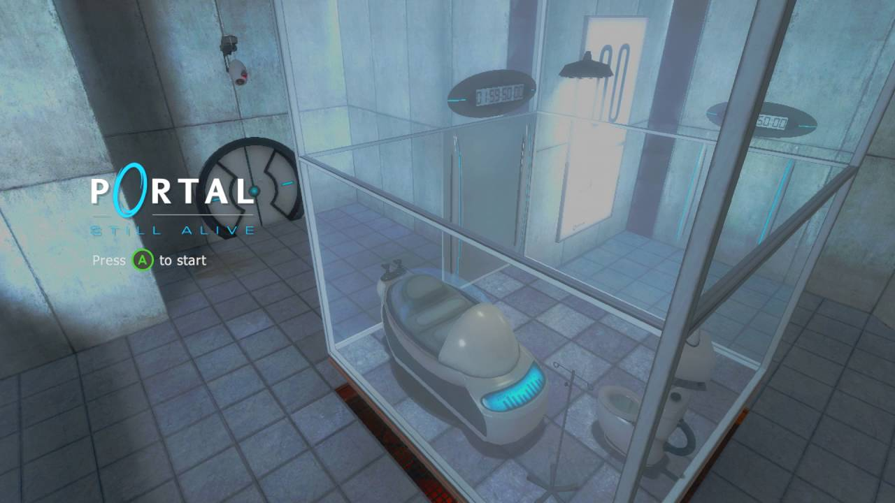

Superliminal is a first-person puzzle game that plays with forced perspective and optical illusions. You wake up in a strange dream world where objects change size based on how you perceive them—hold a tiny object close and drop it, and it becomes massive. The game challenges you to rethink spatial logic and solve puzzles by manipulating perspective, creating mind-bending and surreal experiences as you navigate through dreamlike environments.
Return of the Obra Dinn is a first-person mystery adventure game developed by Lucas Pope. You play as an insurance investigator for the East India Company in the early 1800s. Your task is to board the ghost ship Obra Dinn, which drifted into port with no crew, and determine the fate of each of the 60 people who were on board. Using a magical pocket watch called the Memento Mortem, you can revisit the exact moment of a crew member’s death as a frozen 3D diorama. Through careful observation, deduction, and logic, you must piece together names, roles, and causes of death.
Chants of Sennaar is a puzzle-adventure game inspired by the myth of the Tower of Babel. You play as a robed traveler exploring a mysterious tower divided into cultures that no longer understand each other due to language barriers. Your goal is to decipher multiple fictional languages by observing symbols, interactions, and context — gradually unlocking communication and solving linguistic puzzles to reconnect these isolated societies.

Portal is a first-person puzzle-platformer where you use a handheld portal device to solve physics-based challenges. Set in the mysterious Aperture Science facility, you create linked portals to navigate obstacles, move objects, and escape test chambers—all while being guided (and taunted) by the sinister AI, GLaDOS. The game is known for its clever puzzles, dry humor, and iconic cake meme.
Portal 2 is a first-person puzzle game that expands on the original (Portal) with a deeper story, new characters, and more complex mechanics. You still use the portal gun to solve mind-bending puzzles, but now you also work with gels that alter movement, light bridges, and gravity beams. Set in the decaying Aperture Science labs, you team up with a quirky robot named Wheatley while uncovering the dark history of the facility—all while being stalked by the ever-sarcastic GLaDOS.